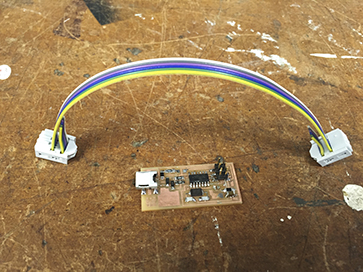
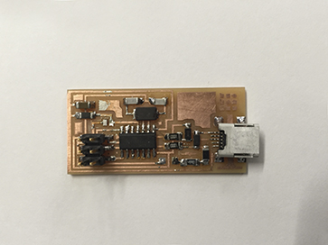
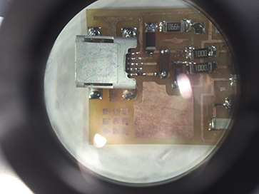

Week 2
To-do:
Make an in-circuit programmer
Program abovementioned programmer
haimish: homey, cozy, unpretentious
electrical resistance: measures the level of difficulty to pass an electrical current through a conductor, the inverse quantity is electrical conductance which measures the level of ease
pull-up/pull-down resistors: used to prevent floating by ensuring that the MCU input pin is either in high (pulled to VCC) or low state (pulled to Ground). Pull-up resistor is more common of the two - it is frequently connected to high voltage (often allocated to VCC) and pull-down is often connected to ground
capacitor: stores electric energy in an electric field between two conductive plates
diode: an electrical device that allows current to move through it in one direction with greater ease
clipper: prevents the output of a circuit from reaching a certain voltage without impacting the remaining waveform
differential signal mode: pair of traces between receiver and driver - one carries a negative signal while the other a positive one. These signals are equal and opposite, thus there is no return signal from ground - what travels along one trace comes back the other. The USB operates under this construct
Serial Peripheral Interface (SPI): synchronously sends data between master (e.g. microcontroller) and slave (e.g. sensor, SD card) compotents by separating the clock and data lines
resonator: creates an external clock signal for the microcontroller
short: happen when current travels down an unintended path between two nodes intended to be at different voltages
open: the opposite of a short, i.e. lack of current between two nodes
Alternating Current (AC):current in which the flow of electrical charge periodically reverses direction
Direct Current (DC): the opposite of AC, i.e. the flow of electrical charge is in one direction only
trigger: a circuit that controls another circuit, converts inputs into outputs. The output remains constant until the input is sufficiently altered
Gersh
Since this is was my first foray into PCB production I thought to keep it simple and use the boilerplate template supplied in the week's lecture. I was rather pleased with the outcome – meet Gersh - an in-circuit programmer.
- 
- 
- 
The final step in the making process is frequently the sweetest one. Here is a screen capture of Gersh being recognized by the computer.